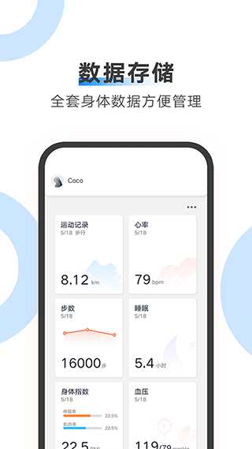

从零上手 AiLink：体脂秤到家人健康档案的完整实战
AiLink 能把体脂秤、血压计等设备的数据全部收进一个 App，还能给家人建档案、跟好友共享部分数据。这篇教程带你从装 App、绑设备到配隐私，一次走通。
读完这篇教程，你应该能做到：在手机上装好 AiLink、把家里的体脂秤或血压计连上、给自己和家人建好档案、让数据自动同步，并且把想看的指标开放给关心的人。整个过程不需要折腾 WiFi 配置，界面上也藏着几个容易踩的小坑，我在后面专门说了。

准备工作：你需要什么
三个条件，缺一个都走不通：
- 一台 Android 或 iOS 手机，蓝牙功能正常
- 至少一台 AiLink 支持的设备（体脂秤、血压计、血氧仪、心率带都行）
- 设备有电、并且还没被别的手机绑定过——如果是二手的，先在原持有人那边解绑
这里注意：AiLink 打开时默认跟随手机系统的语言设置，简中、繁中、英、日、韩、法、德、西、葡、意、俄等 20 种语言全覆盖。想手动固定一种语言（比如系统是中文但想把 AiLink 固定成英文），进「设置」页面找「语言」选项手动切就行，手动选了之后就不再跟随系统变化。切语言只改界面显示，不影响任何测量数据或家人档案。
第一步：安装并登录
应用市场搜「AiLink」下载安装包，或者直接从官网拿。装好之后打开，跟着引导走完注册登录。主账户就是你自己，这个账户的档案会作为默认数据入口。
第二步：绑定第一台设备
点底部的「设备」标签，右上角有个「+」按钮，扫描附近的蓝牙设备。
- 把体脂秤放在平整硬地面上，踩一下唤醒它——秤会发出"嘟"的一声，表示进入配对模式
- 回到手机 App，扫到体脂秤型号后点一下选中，等待 5~10 秒完成配对
- 绑完之后在设备详情页确认一下设备名，可以改成自己认得出来的，比如"家用体脂秤"
别急着点下一步，这里有个新手常踩的坑：如果 App 一直扫不到设备，先确认蓝牙没被系统省电策略杀掉，然后走出房间到秤旁边试一次。某些旧款手机的蓝牙 5.0 和秤的蓝牙 4.2 之间有兼容性问题，多试两三次通常能连上。
第三步：给自己和家人建档案
设备绑定完不会自动测——你需要人站上去它才开始。但在测之前，先把档案填完整。
体脂秤的换算依赖性别、生日（年龄）、身高这三项参数。主账户和每个家人的档案都要确保这几项填对——少一个或填错，读数就只有参考意义。
点底部「我的」，进「家人档案」，你会看到主账户已经在列表里了，后面还能继续加。每新建一个家人，都要填性别、生日、身高、体重这些基础信息。以后所有测量数据都会自动归到对应的家人档案下。
第四步：测一次，看数据怎么流
站上去，脚沾湿一点（皮肤干燥会影响电极信号），等秤发出"嘟"的一声就下来。
回 App 的「数据」页面，你应该能看到刚刚那次测量已经进去了。体脂秤单次测量通常包含：体重、BMI、体脂率、肌肉率、水分率、内脏脂肪指数、基础代谢率、身体年龄、标准体重和肥胖等级。血压计单次测量显示收缩压、舒张压、心率。血氧仪显示血氧饱和度和心率。
数据页面按时间轴排列，可以拖动起止点选时间段——只看最近一个月、或上半年都行。点时间轴上的某个测量点，直接跳转到那次的详情页。各种指标的详细含义可以翻一下ailink文档，那里比 App 里说的清楚。

第五步：跟好友共享数据（可选）
这一步不少人会配错——我第一次用的时候也踩了。
进「我的 → 隐私保护」，你会看到一个家人档案列表（左边列出所有家人档案，右边列出你添加的所有好友）。主账户默认对外是开放的，但这不等于好友能看到所有家人的数据。实际生效需要你手动勾选：点"开放"或"不开放"按钮，把某个人开放给某个好友。灵活一点：让好友 A 看你自己的数据，但不让他看孩子的；让好友 B 只看父母的数据，不看自己的。一个都不勾的话，对方什么都看不到。
关闭某个家人对某个好友的开放后，对方那边这条数据立刻消失，这一点很贴心。好友看不到你的设备列表、设置、账户信息，只能看到你主动开放的家人数据。
常见卡点
1. 出差忘带体脂秤，想补一条数据
某些设备类型支持手动录入。进对应设备的详情页（比如体脂秤的详情页），点右上角「…」更多按钮，找「手动录入」选项。体脂秤可以手动录入体重、体脂率、肌肉率等多项；血压计可以手动录入收缩压、舒张压、心率。手动录入的记录和设备自动测的记录在历史列表里混排显示，但在详情页会有一个"手动录入"的标记，方便区分哪些是自动测的、哪些是人工填的。手动录入的数据不会触发设备侧的任何动作，它只是往云端档案里加一条记录。
2. 秤上测完 App 里没数据
先等 10 秒——蓝牙同步有延迟。如果还没出来，走回设备详情页手动点一次同步按钮。再不行的话，检查一下手机系统是不是把 AiLink 的后台刷新关掉了。
3. 好友说看不到我开放的数据
大概率是你只勾了主账户，但没勾到具体的家人档案。回到隐私保护页面，确认一下每个家人档案右边的开关。
进阶：往下还能玩什么
AiLink 支持多台设备同时接入——体脂秤、血压计、血氧仪可以全部挂在同一个账户下。如果家里老人也在用，可以给他们建一个独立的家人档案，这样他们自己测的数据会自动归到他们那份档案里，方便你随时远程查看。
想深入研究某个指标的长期趋势，数据页面的时间轴可以配合家人档案切换——比如想看看父亲最近三个月的血压变化，切到他的档案然后拖动时间轴就行。
AiLink 的开源资料在 GitHub、Gitee、GitCode 三个平台都维护着同一份，想直接翻源码或提 issue 选你方便的那一个就行：GitHub、Gitee、GitCode。